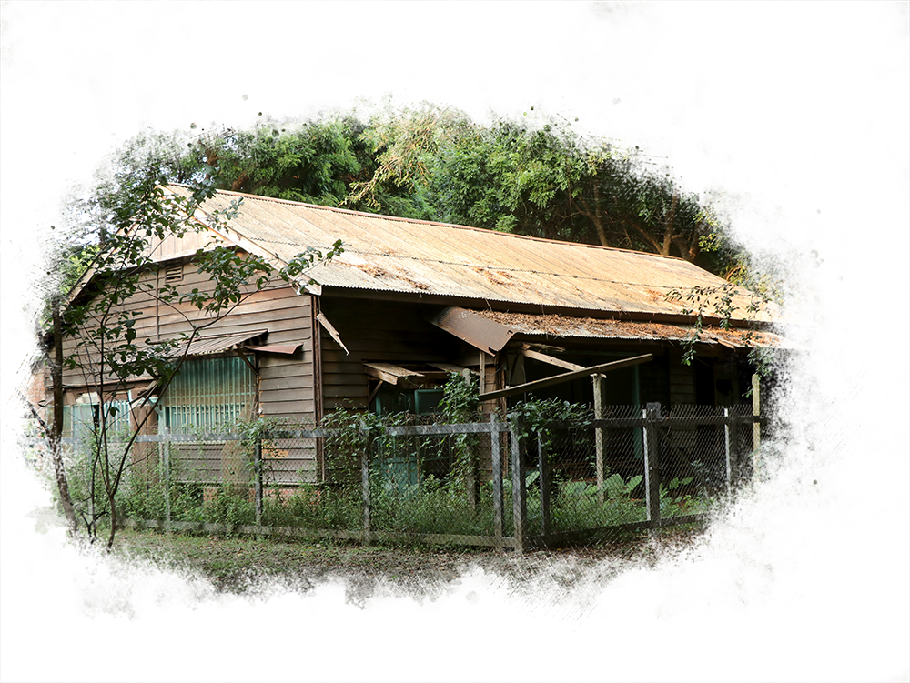

歷史記憶 History
日式宿舍隨著當時虎尾糖廠的興建而興建的，已經有百年歷史，在全盛時期有60間宿舍，四周土地持續興建火車站、診所、理髮廳、公園、學校、醫務所、澡堂、福利社，是當時完整且自給自足的小型都市。由於木製建築容易發生火災，最後剩下11棟。
宿舍連續的毀壞，也引起當地人士的抗議及保留聲四起，所以宿舍四周架起透空圍籬的隔離保護動作。由於宿舍的主管單位為虎尾糖廠，所以糖廠的高層主管也受到地方人士的抨擊，而目前虎尾糖廠是外包保全公司定期巡邏。
目前有3棟宿舍被列入雲林縣古蹟保存，分別是第一公差宿舍、第三公差宿舍及廠長宿舍，都相鄰於民生九路上，現在還有人居住在內。公差宿舍為日治時期糖廠的招待所，平時提供員工出差、短暫住宿的地方。